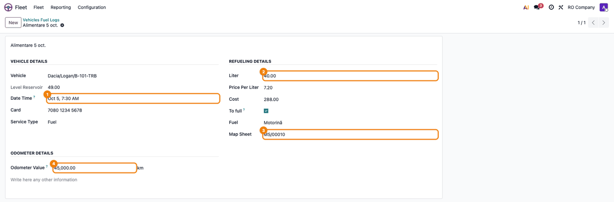
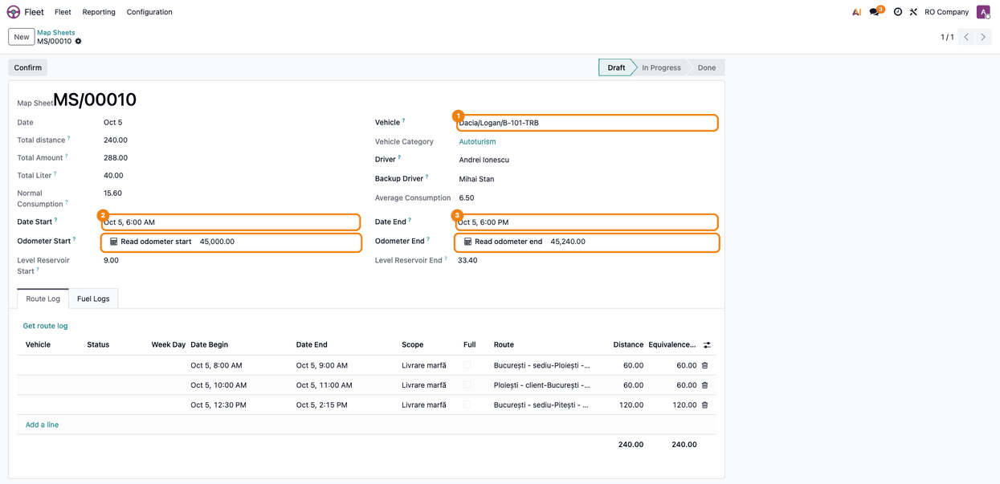
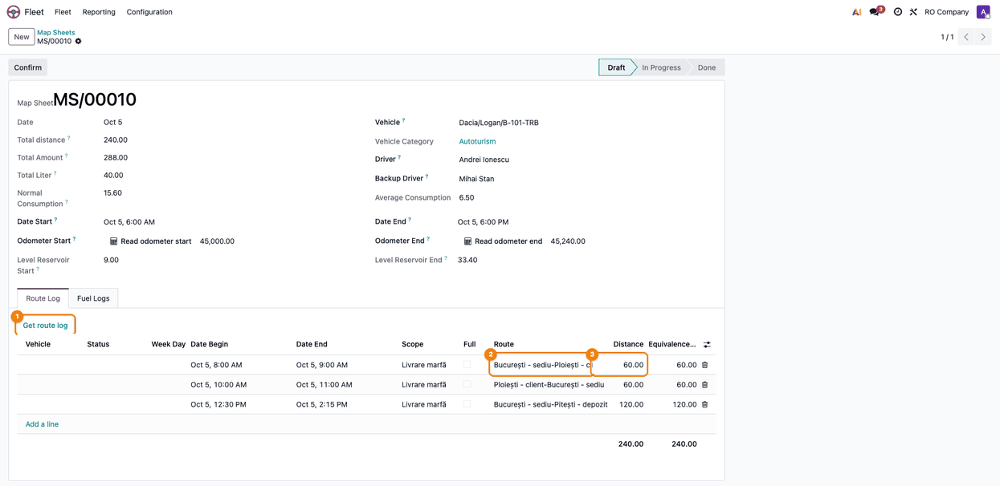
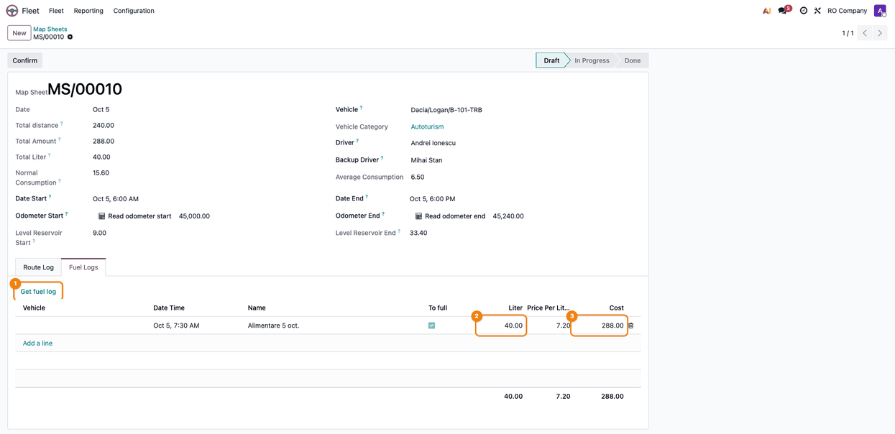
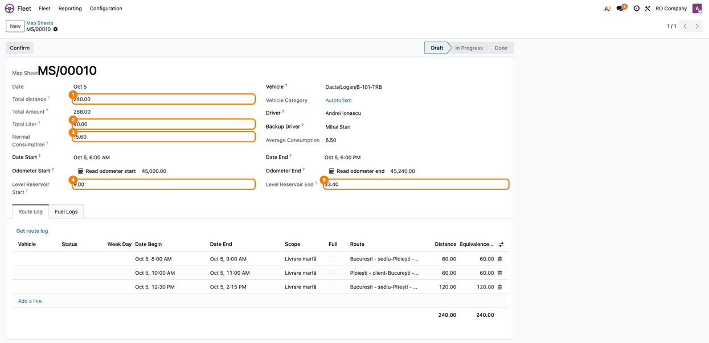
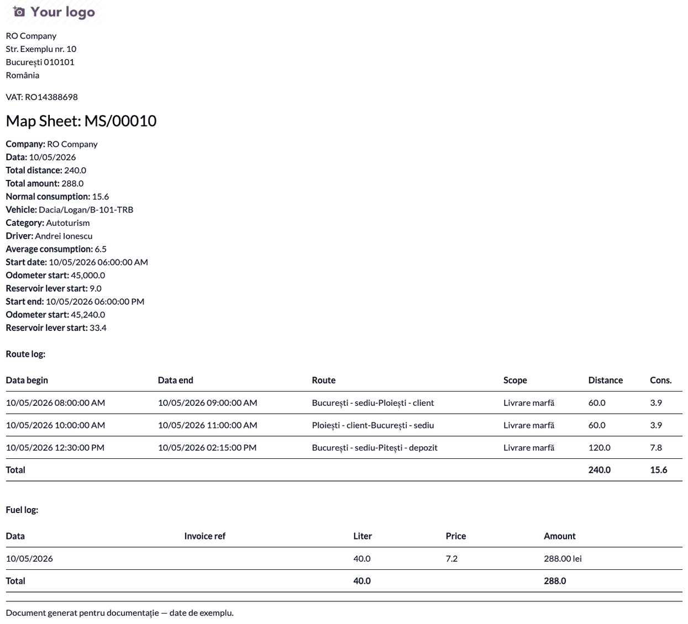
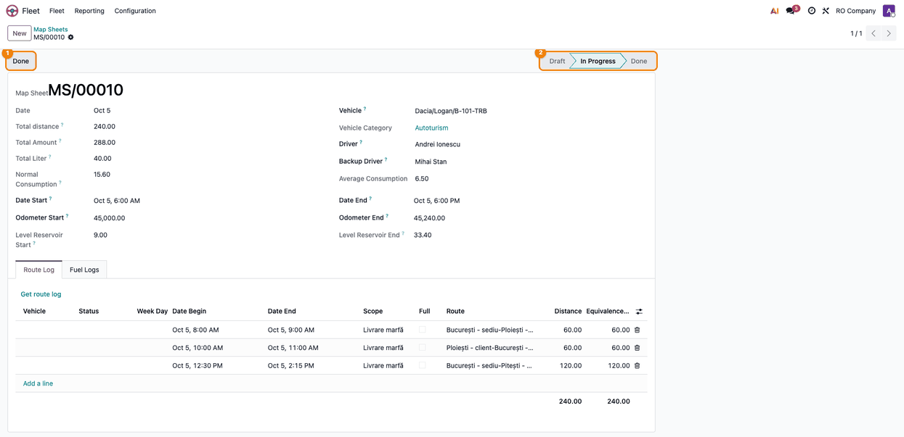
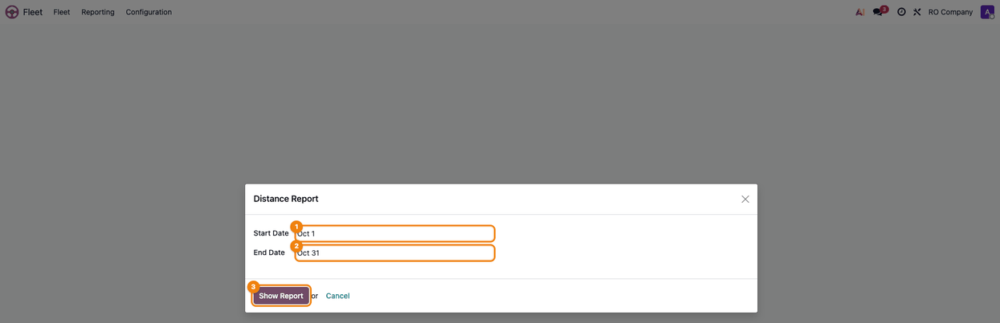
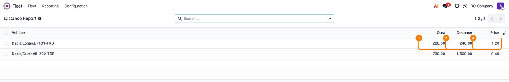

★
Did this module help you? It is free, built and maintained by the Terrabit developers. If it saved you time, a rating on this page is the best way to say thanks — and it helps other Odoo users find it too. Thank you for your support!
Overview
Extends the Fleet application with map sheets (route sheets), fuel logs and
fuel cards.
Features:
✓Additional vehicle data: indicative, backup driver, vehicle category,
engine serial number, mass capacity, useful weight, reservoir capacity,
average consumption (urban / exterior / mixed), average speed, ownership
and allocation details, fuel cards.
✓Fuel cards: allocate cards to vehicles and to refuelling entries.
✓Fuel logs: refuelling entries per vehicle, linked to a fuel card and to a
map sheet; the reservoir level is computed at the refuelling moment.
✓Routes and locations: locations, distances and travel durations between
them, with one-click creation of the reverse route.
✓Map sheets: route logs and fuel logs per vehicle and period, start/end
odometer, total distance, normal consumption, reservoir level at start and
end, PDF report.
✓Automatic computation of the fuel level in the reservoir from refuelling
entries and the normal consumption of the route logs.
✓Cost per kilometre report per vehicle and period.
Usage
Map sheets and route logs are managed by a Fleet Administrator; a Fleet Officer can record
fuel logs. Before you start, fill in on the vehicle the Average Consumption (l/100 km, used for
the normal consumption of the routes), the Reservoir capacity, the vehicle category and the fuel
cards, and create the locations and the routes between them (Fleet → Fleet → Master data).
- Record the fuel logs — Fleet → Fleet → Vehicles Fuel Logs, New. Fill in the vehicle,
the Date Time, the card, the liters, the price per liter and the amount (any two compute the
third), To full, the fuel and the odometer. Optionally link the map sheet; only the sheets of
the vehicle that include the date are proposed. The odometer becomes an odometer reading of the
vehicle.

- Create the map sheet — Fleet → Fleet → Map Sheets, New (or the Map Sheets button on
the vehicle). The number is given automatically. Choose the vehicle (the drivers, the category
and the average consumption are filled in), then the Date Start and Date End. Odometer
Start and Odometer End are read from the odometer readings of the vehicle or written by hand;
the Read odometer buttons repeat the reading while the sheet is in Draft.

- Add the route logs — in the Route Log tab, add one line per trip: choosing the route fills
in the distance and the end time. Route logs recorded separately (Fleet → Fleet → Route Log)
for the vehicle and the period are brought in with Get route log.

- Add the fuel logs — in the Fuel Logs tab, add the fuel logs directly, or bring the ones of
the vehicle and the period with Get fuel log.

- Check the sheet — the header shows Total distance, Total Liter, Total Amount,
Normal Consumption (distance × average consumption / 100) and the computed reservoir level at
the start and at the end. Odometer End − Odometer Start should equal Total distance,
and the end level should be about the start level + liters − normal consumption.

Print the sheet from Print → Map Sheet: the PDF contains the header, the route logs and the
fuel logs.

- Confirm and close the sheet — Confirm moves the sheet to In Progress; Done closes
it and marks its fuel logs as done. A sheet with a total distance of zero cannot be closed.
Duplicating a sheet creates the sheet of the next day.

- Cost per kilometer — Fleet → Reporting → Distance Report (Fleet Administrator) asks for
the Start Date and End Date (the current month by default). Show Report lists, per
vehicle, the Cost (services and contracts of the vehicle, fuel logs included), the
Distance (from the odometer readings at the ends of the period) and the Price per km.
The distance goes from the reading before the period (or the first one in it) to the reading
after the period (or the last one in it); with a single reading, the distance and the price are
zero.


Versions
19.0.1.0.5 (2026-11-01)
- The cost per km report includes the costs changed in the same transaction:
a fuel or service log whose date was just edited was counted in the month
of its old date (or not at all), because the cost view read the tables
before the pending changes were saved.
19.0.1.0.4 (2026-10-22)
- Listed on Odoo Apps as Fleet Map Sheets & Fuel (was Fleet Routes and Map Sheets). The technical name
deltatech_fleet does not change.
19.0.1.0.3 (2026-10-12)
- The normal consumption of a route log is recomputed when its distance or
vehicle changes; it used to keep the value from creation, so the map sheet
total and the reservoir level stayed wrong after editing a route.
- Opening a map sheet no longer creates an odometer reading on the vehicle.
The odometer start used to write the end value as a side effect, and the
next opening took that reading as start, losing the distance of the sheet.
The readings of the sheet itself are no longer taken as the other end.
- The reservoir level includes the fuel logs and route logs not yet saved
in the same transaction (for example when a map sheet is saved with new
routes); it used to show the level without their consumption.
- Changing the vehicle of a map sheet moves its fuel logs, route logs and
odometer readings to the new vehicle; they used to keep the old one.
- Moving the start of a map sheet moves its draft routes by that change
only. The first change used to move nothing and the later ones were
measured from the first start, so the routes drifted.
- A route log without a begin date no longer crashes on the week day.
- Map sheet default dates work for users without a time zone (UTC is used).
- Removed unused odometer methods on fuel logs and a no-op domain in the
route log onchange.
- Tests for map sheets, fuel logs, vehicles, routes, the distance report and
the map sheet printout.
19.0.1.0.2 (2026-10-09)
- New module icon (yellow car, flat Terrabit style).
19.0.1.0.1 (2026-10-09)
- Apps Store banner (banner.json).
19.0.1.0.0 (2026-10-08)
- Migration to 19.0:
models.Constraint instead of _sql_constraints,
SQL() builder for the raw queries and the cost report view,
_read_group in the cost per kilometre report, self.env._()
translations, company check on map sheets.
18.0.1.0.0 (2026-10-08)
- Migration to 18.0:
list views, <chatter/>, kanban card template,
aggregator instead of group_operator.
- The vehicle category (M1, N1, O1...) is now
vehicle_category_id. The
module used to replace the standard category_id of the vehicle (model
category) with a different comodel, which broke the install on databases
with vehicles. A migration script moves the existing values and restores
the standard category from the vehicle model.
- The map sheet sequence gets its
fleet.map.sheet code, so map sheets are
numbered again instead of named "/"; a duplicated map sheet no longer fails.
- The cost report view includes the standard
vehicle_type column.
- Access rights without a group are now given to the Fleet user group.
- Description rewritten.
Need help getting started?
Our 600+ apps on the Odoo Apps Store are used in Odoo implementations across Europe,
the Americas, Asia and Africa — by companies we have never even met. That is the
advantage of building modules that simply work.
Questions about this module, or need it adapted to your processes?
Write to us — the developers who build it will answer.
Terrabit support →